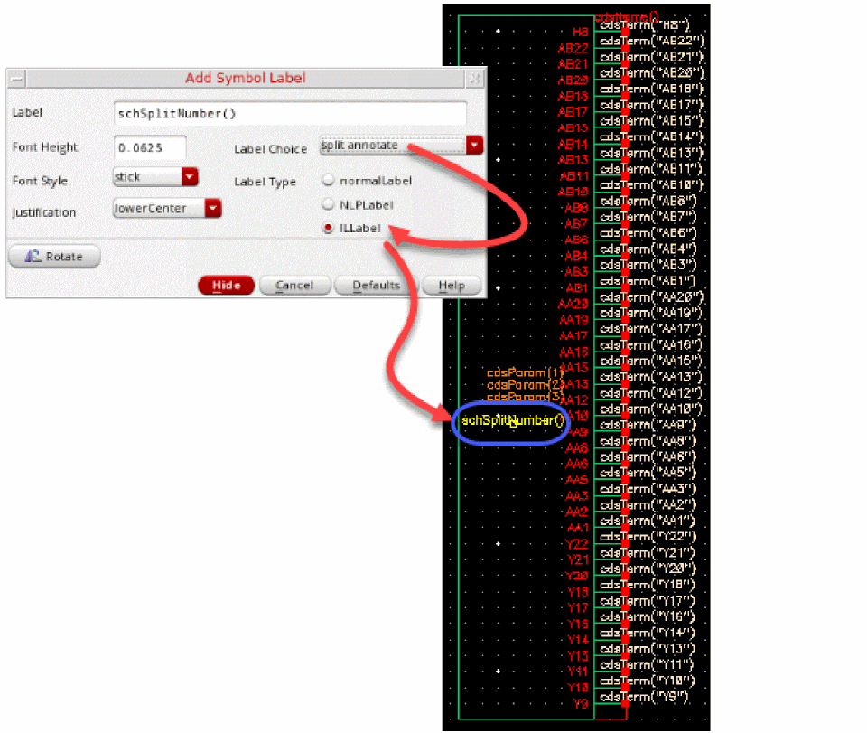
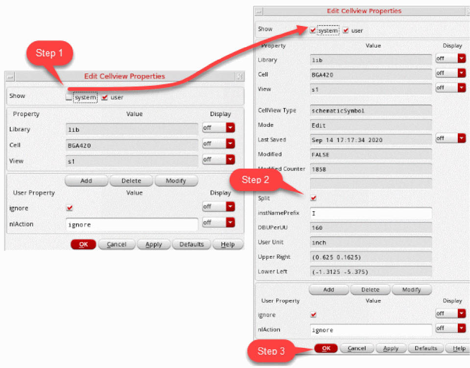
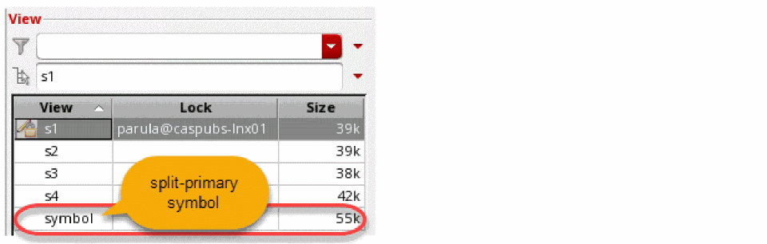
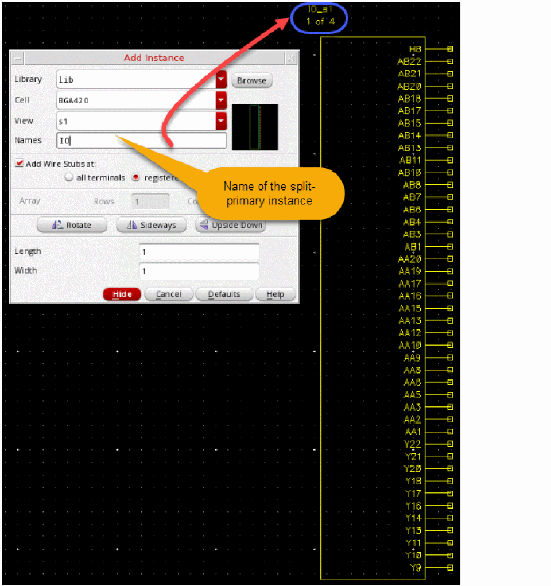
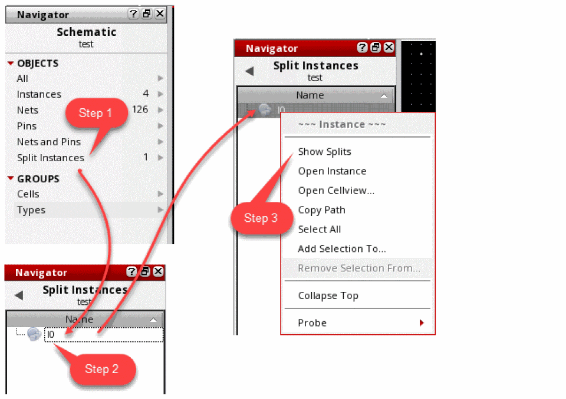
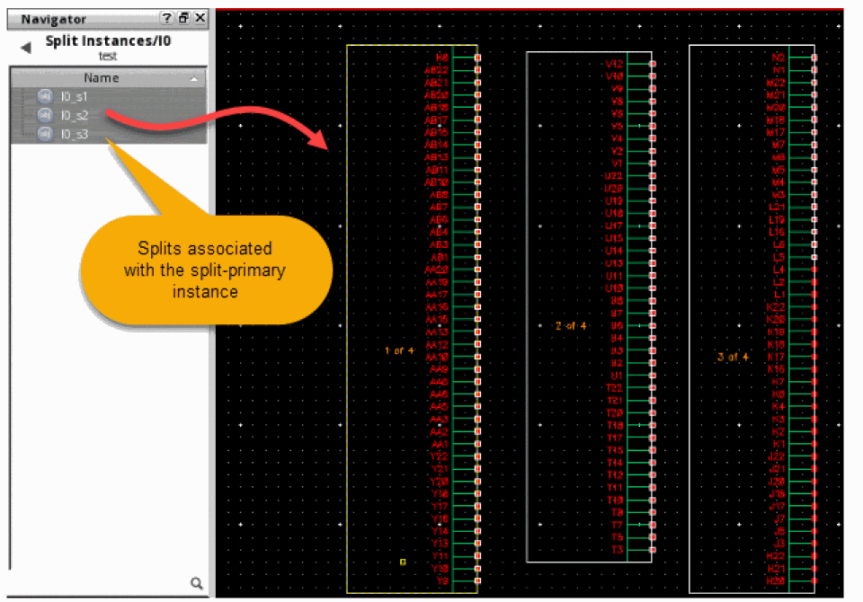

21
Using Split Symbols
Large symbols that have hundreds of pins are difficult to manage within a schematic design. The Split Symbols feature in Virtuoso Schematic Editor lets you split a large symbol into multiple partial symbols. Splitting such a large symbol master allows the schematic to be more readable and have a legible presentation of the pin symbols. This feature is most useful for PCB and package schematics.
A split symbol for a component can be created manually using Virtuoso Symbol Editor. The Symbol Editor then automatically generates a large split-primary symbol, which has a combination of all the pins from the splits created for the component.
You can add a split symbol to a schematic by using the Create – Instance command. You can add split symbol instances only for scalar instances. Vector instances are not supported.
When you add a split symbol instance, a hidden split-primary instance is also automatically added to the schematic. Although the split-primary is invisible in the schematic canvas, it is the split-primary instance that represents the component in the other design tools, such as simulation and layout. The splits are ignored instances, and therefore are avoided by netlisters.
Every split component has an attribute, Split Primary, which specifies the name of the primary instance they are merged into. The Check – Current Cellview command ensures that the signals on the split components are carried through to the component pins of the invisible split-primary. The properties and CDF parameters for the component are stored on the split-primary symbol.
The tool automatically maintains correct connectivity between the split-primary and the individual splits. Where there is ambiguity that cannot be resolved, for example if there are different nets attached to the same pin or terminal in splits of the same primary, an error marker with an appropriate message is placed in the canvas.
This chapter covers the following topics for the split symbols feature in Virtuoso Schematic Editor.
- Creating Split Symbols
- Adding Split Instances to a Schematic
- Viewing the Splits in a Design
- Editing Properties of Split Instances
Creating Split Symbols
Using the Virtuoso Symbol Editor, you can create split symbols like regular symbols. However, when creating a split symbol, ensure that the cell has no views with the name symbol. The view name symbol is reserved for the automatically generated split-primary symbol. The split view can have any other name, for example, s1, s2, s3 or a1, b1, c1, and so on.
Related topics
- Creating New Symbols
- Creating Symbol Cellviews Using Generators
- Automatically Creating a Cellview from a Pin List
Adding a Split Annotate Label
To help identify the split you are currently working with, add a split annotate IL label to the symbol.
- Choose Create – Label. The Add Symbol Label form appears.
- Set the Label Choice cyclic field to split annotate.
- In the Label Type field, select ILLabel.
-
Move the mouse cursor to the cellview and click to place the label. This label helps you understand which split you are viewing in your schematic by providing indication, such as
1 of 5,2 of 5, on the split master symbol.
Once all the shapes, pins, and labels are added to the symbol and it is ready to be saved, the symbol needs to be marked as a split.
Marking a Symbol as a Split Symbol
- Choose Edit – Properties – Cellview. The Edit Cellview Property form appears.
- Select the System option in the Show group box to show the system properties for the form.
- Select the Split check box in the system view.
-
Click OK and save the cellview.
 -
After all the splits are created, click Check and Save one of the split symbol, to check and save split symbols.
This automatically generates the split-primary symbol. The split-primary symbol consists of terminals from all split symbols.

Adding Split Instances to a Schematic
To add split instances to a schematic:
-
Choose Create – Instance. The Add Instance form displays.
Adding the first split instance automatically creates a hidden split-primary instance. The split-primary is invisible in the Virtuoso Schematic Editor canvas. However, it can be viewed in the Objects category in the Navigator Assistant. For example, as soon as a split instanceI0_ais added, a split-primaryI0is automatically created for it. - Specify the library, cell, and view name that you want to instantiate in the Library, Cell, and View name fields.
-
Place the selected instance in the schematic.
Similarly, use the Add Instance form to place the remaining splits in the schematic.
When adding the remaining splits of a component, specify the name of the split-primary instance of which the splits are a part of. The name can be changed later by editing the Split Primary attribute in the Property Assistant.

You can also add new split instances by copying existing split instances in the design. When you copy a split instance, the relevant split-primary instance is copied as well, and the new split is correctly linked to the new split primary.
schCopy SKILL API, you must explicitly copy the split instance and the split-primary and then link the two.Viewing the Splits in a Design
When a split instance is first added to a schematic, a split-primary instance is automatically created for it. This split-primary instance can be seen in the Instances set under the Objects category of the Navigator assistant. The split instances do not appear in the Instances set because their status is set to ignored.
To view the split instances in the Navigator Assistant:
- Click the Split Instances set under the Objects category in the Navigator Assistant. This set lists all the split-primary instances in the design.
- Select the split-primary instance. When the split-primary instance is selected in the Navigator Assistant, all the associated split instances are automatically selected in the schematic editor canvas.
-
Right-click a split-primary instance in the Navigator Assistant and click Show Splits.
The Navigator assistant displays the splits associated with the split-primary instance.

Editing Properties of Split Instances
The split-primary instance represents the splits in netlists and layouts. Therefore, instance CDFs, if any, are stored on the hidden split-primary instance and not the splits. However, it is possible to view and edit these properties by selecting any one of the split instances.
For example, to adjust the Length attribute for the BGA device:
- Select a split symbol
- Modify the attribute value using the Property Assistant or the Edit Object Property form.
The modified value of the attribute is replicated on all the other splits too. This is because the modified attribute is saved to the split-primary.
Return to top